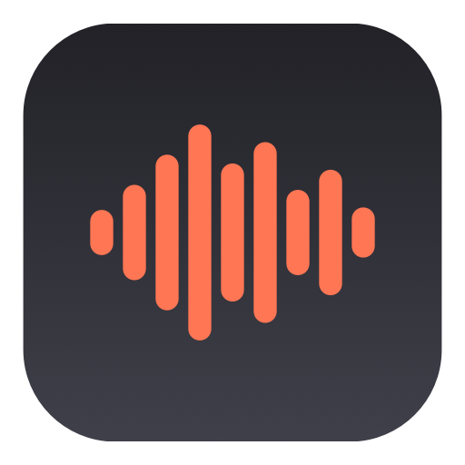

Hushtype
Hold a key, talk, let go. Your words land wherever your cursor is. Free, open source, and everything runs on your Mac.
macOS 14+ · Apple Silicon · MIT licence · no account, no subscription
brew install --cask sturzael/tap/hushtypeWhy people switch from Willow, Wispr Flow and Superwhisper
100% on-device
Speech-to-text runs with WhisperKit on the Apple Neural Engine. Works offline. Audio never leaves the machine.
Any hotkey chord
Left and right modifiers are different keys. Default is left ⌃ + left ⌥, which collides with nothing. Hold to talk or press to toggle.
Pastes anywhere
Slack, Gmail, Xcode, Terminal, Notes, the browser. Wherever the cursor is. Your clipboard is restored afterwards.
Native and tiny
One Swift binary, about 2 MB. No Electron, no Tauri, no background helpers. Menu-bar only.
Optional AI polish
Add a Claude API key and Hushtype removes fillers, fixes punctuation and spells names from your personal dictionary. Off by default.
Open source
MIT licensed. Read every line that touches your microphone. Issues and pull requests welcome.
Compared
| Hushtype | Willow Voice | Wispr Flow | Superwhisper | |
|---|---|---|---|---|
| Price | Free | US$12–15/mo | US$12–15/mo | US$8.49/mo |
| Audio stays on device | Yes | Cloud by default | Cloud | Yes |
| Native Swift | Yes | — | — | Yes |
| Left/right-specific chords | Yes | No | No | Partial |
| Open source | Yes | No | No | No |
Prices and features as of October 2026. Corrections welcome via pull request.
How it works
Hushtype captures your microphone only while the chord is held, converts the audio to 16 kHz mono, runs it through Whisper Large v3 Turbo in-process, and types the result into the frontmost app with a synthetic ⌘V. The model (about 630 MB) downloads once on first launch. The only network request the app can make is the optional Claude cleanup, and only with a key you provide.